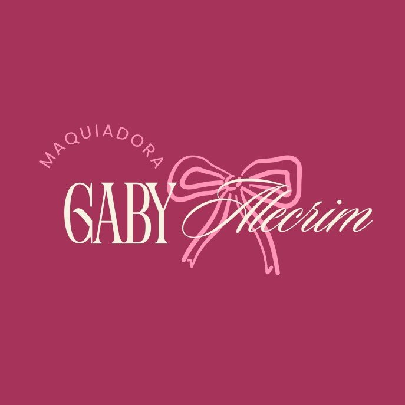
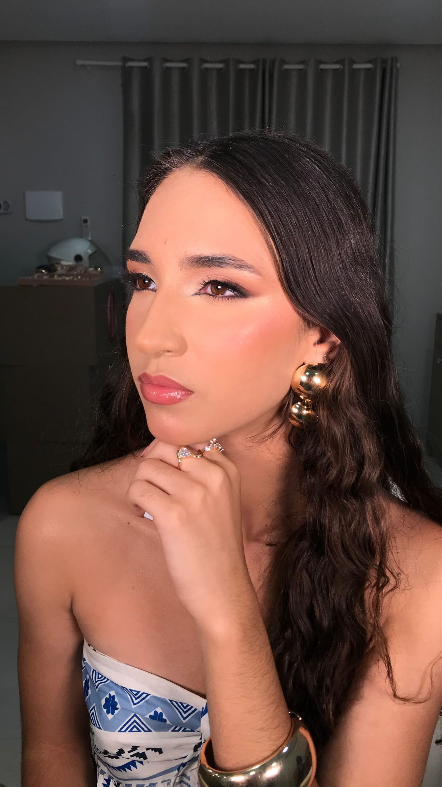

Leve & iluminada
Inspirações que valorizam a pele, com tons suaves e um brilho delicado.
Conversar sobre essa make
GABY ALECRIMMAKEUP AgendarBELEZA COM A SUA ESSÊNCIA
Uma maquiagem para você se olhar no espelho e se sentir ainda mais você.
Quero agendar minha makeVamos combinar seu horário pelo WhatsApp.

A MAKE DO SEU MOMENTO
Do toque delicado ao olhar marcante: compartilhe sua inspiração e consulte as possibilidades para a sua ocasião.
Inspirações que valorizam a pele, com tons suaves e um brilho delicado.
Conversar sobre essa makeEsfumados e definição para quem quer dar protagonismo ao olhar.
Conversar sobre essa makeUma produção pensada a partir do seu estilo, do seu look e da sua ocasião.
Conversar sobre essa makeDO INSTAGRAM PARA CÁ
POR TRÁS DA MARCA
“Realçando o que já é seu.” Essa é a essência da Gaby Alecrim Makeup: colocar a sua beleza no centro de cada produção.
Conheça os registros e inspirações no Instagram. Para pensar na sua próxima make, conte a ocasião, envie suas referências e converse diretamente com a Gaby.
@gabyalecrimmakeupUM MOMENTO SÓ SEU
Envie uma mensagem com a data e a ocasião.
A gente conversa sobre a sua make.
Horários, valores e local de atendimento sob consulta.